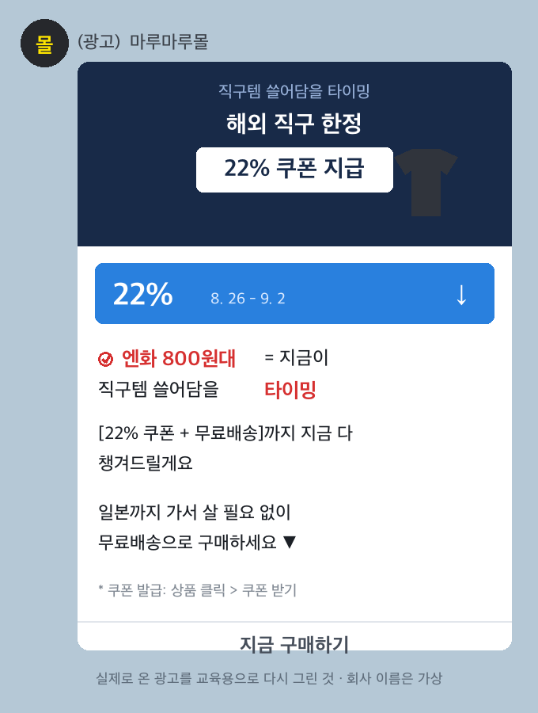
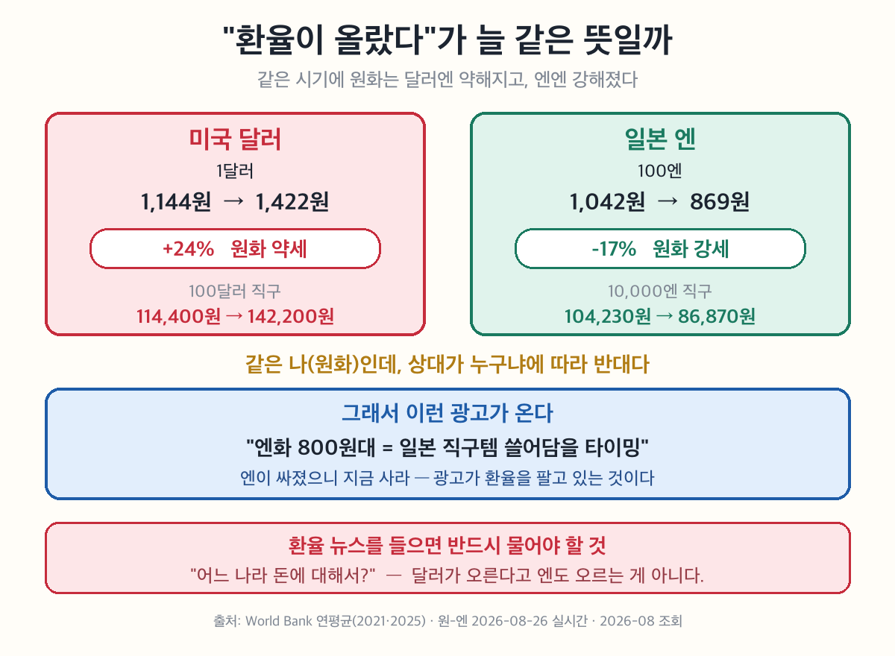

사회② 국민경제와 국제거래 5-5차시 — 해외 직구할 때 '환율 오름' 뜨면 왜 비싸질까? (환율의 결정과 영향)
해외 직구할 때 '환율 오름' 뜨면 왜 비싸질까?
환율 = 두 나라 돈을 바꾸는 비율. 다르게 말하면 외화의 가격이다.
1달러 = 1,400원 이라고 쓴다. 이건 "달러라는 물건의 값이 1,400원" 이라는 뜻이다.
🔴 환율을 '물건 값'으로 읽는 순간 전부 쉬워진다.
• 환율이 오른다 = 달러가 비싸졌다
• 달러가 비싸졌다 = 원화로는 더 많이 줘야 한다
환율도 수요·공급으로 정해진다. 4단원에서 배운 그 원리 그대로다 — 달라진 건 상품이 달러라는 것뿐.
| 언제 생기나 | 환율은 | |
|---|---|---|
| 외화 수요 ↑ | 수입 증가·해외여행·유학 | 오른다 |
| 외화 공급 ↑ | 수출 증가·외국인 투자 유입 | 내린다 |
뒤집어 보면 — 달러를 사려는 사람이 많으면 달러 값(환율)이 오르고, 팔려는 사람이 많으면 내린다. 시장에서 사과값 정해지는 것과 똑같다.
🔴 가장 헷갈리는 지점. 둘은 항상 반대로 움직인다.
| 환율 | 원화 가치 | 뜻 | |
|---|---|---|---|
| 1달러 = 1,200원 | — | — | 기준 |
| 1달러 = 1,400원 | 올랐다 ↑ | 떨어졌다 ↓ | 달러 사려면 원화를 더 줘야 함 |
| 1달러 = 1,000원 | 내렸다 ↓ | 올랐다 ↑ | 원화를 덜 줘도 됨 |
외우는 법 — 환율은 달러의 값이다. 달러가 비싸지면 상대적으로 원화는 싸진 것이다. 시소를 떠올리면 된다.
환율이 오르면(원화 가치 ↓) 우리 생활은 이렇게 갈린다.
| 환율 상승 시 | 왜 | |
|---|---|---|
| 수출 | 유리 ✅ | 우리 물건이 외국에서 싸 보인다 |
| 수입 | 불리 ❌ | 같은 물건에 원화를 더 줘야 한다 |
| 국내 물가 | 오름 ❌ | 수입 원자재값이 올라 밀어 올린다 |
| 해외여행 | 불리 ❌ | 같은 여행에 돈이 더 든다 |
5-2와 이어진다 — 환율이 오르면 물가도 오른다. 5-2에서 배운 물가 상승 3원인 중 '생산비 상승' 이 바로 이 길이다.

🎙️ 해외 직구나 여행을 떠올려 봐. '1달러=1,300원' 같은 숫자를 본 적 있지? 이게 환율이야. 다른 나라 돈을 우리 돈으로 바꾸는 비율이지. 그런데 이 숫자가 오르면 직구가 비싸지고, 내리면 싸져. 게다가 환율은 우리 부모님의 일자리(수출 기업)와도 연결돼. 오늘은 환율이 어떻게 정해지고 우리 생활을 어떻게 흔드는지 알아보자.
📌 학습 목표
- 환율의 의미와 결정 원리를 설명할 수 있다.
- 환율 변동이 우리 생활에 미치는 영향을 설명할 수 있다.
✨ 오늘의 고급 단어
| 낱말 | 쉽게 말하면 | 한자 뜯어보기 | 문장 속에서 |
| 환율(換率) | 돈을 바꾸는 비율 | 환(換, 바꿀) + 율(率, 비율) | "환율이 올라 직구가 비싸졌다." |
| 외화(外貨) | 다른 나라 돈 | 외(外, 바깥) + 화(貨, 재물·돈) | "달러는 대표적인 외화다." |
| 가치(價値) | 얼마나 값어치가 있는지 | 가(價, 값) + 치(値, 값) — '값'이 두 번 | "원화 가치가 떨어졌다." |
| 강세(強勢) / 약세(弱勢) | 힘이 센 상태 / 약한 상태 | 강·약(強弱) + 세(勢, 기세) | "원화 약세로 수출이 늘었다." |
| 외채(外債) | 외국에서 빌린 빚 | 외(外, 바깥) + 채(債, 빚) | "환율이 오르면 외채 부담이 커진다." |
💡 오늘 딱 하나만 잡자 — 환율(換率)의 '환'이 '바꿀 換'이라는 것. 환전(換錢)·교환(交換)의 그 '환'이야. 바꾸는 비율, 그게 전부다.
🎙️ '가치(價値)'는 왜 '값'이 두 번일까? 옛날 사람들에게 값어치란 한 글자로는 부족했나 봐. 오늘 배울 것도 그래 — 환율이라는 값이 오르면 원화의 값이 내린다. 값 두 개가 시소를 탄다고 생각하면 딱 맞아.
📖 1단계: 환율이란 무엇일까?
나라마다 다른 화폐를 쓰므로 무역·여행 시 그 나라 돈으로 바꿔야 한다. 이때 두 나라 화폐를 교환하는 비율이 ①이다. 미국 1달러를 얻는 데 우리 돈 1,100원이 필요하면 환율은 '1,100원/달러'로 적는다. 곧 환율은 외국 화폐의 ②이다.
(교과서 원문: "두 국가의 화폐를 교환하는 비율이 환율이다. 예를 들어 미국 1달러를 얻기 위해서 우리나라 원화 1,100원을 주어야 한다면 … 환율은 달러당 1,100원이고, '1,100원/달러'로 표기한다. 즉, 환율은 외국 화폐의 가치(가격)이다." — 천재교육 사회②(구정화) 105쪽)
📊 교과서의 '1,100원'은 언제 이야기일까? 실제로 2018년 평균 환율이 1,100원이었다. 교과서가 틀린 게 아니라 그때 기준인 것이다. 그 뒤로는 이렇게 움직였다.
| 연도 | 환율(원/달러) |
| 2018 | 1,100 ← 교과서 예시 |
| 2021 | 1,144 |
| 2022 | 1,291 |
| 2025 | 1,422 |
(출처: World Bank, Official exchange rate, 대한민국 · 2026-08 조회)
🎙️ 7년 사이에 300원 넘게 올랐어. 숫자만 보면 작아 보이지? 그런데 100달러짜리 직구로 바꿔 보면 110,000원이 142,200원이 돼. 3만 원이 넘게 차이 나는 거야.
💡 환율 = 달러의 '가격표': 사과 한 개 값이 '1,000원'이듯, 달러 한 개 값이 '1,100원'이라고 보면 돼. 그래서 환율이 오른다 = 달러가 비싸졌다 = 우리 돈으로 달러 사기가 더 힘들어졌다는 뜻이야.
📖 2단계: 환율은 어떻게 정해질까?
재화의 가격이 시장에서 수요와 공급으로 정해지듯, 외국 화폐의 가격인 환율도 그 외화의 ③와 ④으로 결정된다. 달러를 사려는 ③가 늘면 환율이 ⑤하고(원화 가치 하락), 달러가 들어와 ④이 늘면 환율이 ⑥한다(원화 가치 상승).
(교과서 원문: "재화와 서비스의 가격은 시장에서 수요와 공급으로 결정된다. 마찬가지로 외국 화폐의 가격인 환율도 그 외국 화폐의 수요와 공급으로 결정된다." — 천재교육 사회②(구정화) 105쪽)
🎙️ 앞에서 배운 수요·공급 곡선을 그대로 쓰면 돼! 달러 수요가 늘면(곡선 오른쪽 이동) 달러 값(환율)이 오르고, 달러 공급이 늘면 달러 값이 내려. '상품' 자리에 '달러'를 넣은 것뿐이야.
📖 3단계: 환율이 오르면 원화 가치는 내린다
환율이 1,100원에서 1,300원으로 오르면, 1달러를 얻는 데 더 많은 원화가 든다. 즉 환율 상승은 우리 돈의 가치가 ⑦한 것이다. 반대로 환율이 내리면 원화 가치는 ⑧한다.
(교과서 원문(탐구 길잡이): "달러의 수요 증가 = 환율 상승 = 원화 가치 하락 = 달러 가치 상승" / "달러의 공급 증가 = 환율 하락 = 원화 가치 상승 = 달러 가치 하락" — 천재교육 사회②(구정화) 105쪽)

🎙️ 시소를 떠올려. 환율이 올라가면 원화 가치는 반드시 내려가. 둘이 같이 올라가는 일은 없어. 왜냐하면 환율이라는 게 애초에 '달러의 값'이거든. 달러가 비싸졌다는 말은 곧 원화가 싸졌다는 말이야. 같은 사실을 두 가지 말로 하는 것뿐이지.
⚠️ 최다 함정 — 환율 ↑ = 원화 가치 ↓: 환율이 '올랐다'는데 왜 우리 돈 '가치'는 떨어질까? 같은 1달러를 얻는 데 더 많은 원화가 필요해졌으니, 원화 한 장의 힘이 약해진 거야. '환율 상승 = 원화 강세'로 착각하기 쉬우니 꼭 거꾸로 기억!

🎙️ 이 광고, 뭘 팔고 있을까? 얼핏 보면 쿠폰을 파는 것 같지? 그런데 맨 윗줄을 다시 읽어 봐 — "엔화 800원대 = 지금이 타이밍". 쿠폰이 아니라 환율을 이유로 대고 있어. 광고를 만든 사람은 오늘 배울 걸 이미 알고 있는 거야.
🎙️ 잠깐 — "환율이 올랐다"가 늘 같은 뜻일까? 뉴스가 그냥 "환율" 이라고 하면 보통 달러 이야기야. 그런데 돈은 달러만 있는 게 아니지.

같은 시기에 원화는 달러에는 약해지고 엔에는 강해졌다. 그래서 미국 직구는 비싸졌는데 일본 직구는 싸졌다. 환율은 두 나라 돈 사이의 비율이므로, 상대가 누구냐에 따라 방향이 달라진다.
🎙️ 광고가 환율을 팔고 있어. "엔화 800원대 = 일본 직구템 쓸어담을 타이밍" — 이런 광고를 본 적 있을 거야. 엔이 싸졌으니 지금 사라는 뜻이지. 광고를 만든 사람은 4단계의 "환율 하락 → 수입 유리" 를 정확히 알고 쓴 거야.
🔎 그래서 환율 뉴스를 들으면 반드시 하나를 물어야 해 — "어느 나라 돈에 대해서?" 달러가 오른다고 엔도 오르는 게 아니거든.
📖 4단계: 환율이 변하면 우리 생활은?
환율이 오르면(원화 약세) 우리 수출품이 외국에서 싸져 ⑨이 늘지만, 수입 원자재 값이 올라 국내 물가가 오르고 해외여행·유학 비용이 비싸진다. 환율이 내리면(원화 강세) 수입품이 싸져 물가가 안정되지만, 수출이 줄어 국내 기업의 생산이 위축되고 ⑩이 늘 수 있다.
(교과서 원문(표): 환율 상승 — 긍정: 수출 증가→생산·고용 확대 / 부정: 수입 원자재 가격 상승→생산비↑·물가 상승·외채 부담 가중. 환율 하락 — 긍정: 수입 원자재 가격 하락→물가 안정·외채 부담 경감 / 부정: 수입 증가→국내 기업 생산 위축·고용 감소·실업 증가 — 천재교육 사회②(구정화) 105쪽)
| 환율 상승 (원화 약세) | 환율 하락 (원화 강세) | |
| 수출 | 유리 ✅ — 우리 물건이 외국에서 싸 보임 | 불리 ❌ — 비싸 보임 |
| 수입 | 불리 ❌ — 원화를 더 줘야 함 | 유리 ✅ — 덜 줘도 됨 |
| 국내 물가 | 오름 ❌ — 수입 원자재값 상승 | 안정 ✅ |
| 해외여행·직구 | 불리 ❌ | 유리 ✅ |
| 외채 부담 | 커짐 ❌ | 줄어듦 ✅ |
🔗 지난 시간과 이어진다. 5-4에서 국제 거래엔 관문이 셋(관세·통관·환율)이라고 했지? 그 마지막 관문이 오늘 이거야. 그리고 환율이 오르면 물가가 오르는 길은 5-2에서 배운 물가 상승 3원인 중 '생산비 상승' 이야. 수입 원자재가 비싸지니까 만드는 값이 올라가는 거지.
💡 '환율 오름'이 직구를 비싸게 하는 이유: 환율이 오르면 같은 10달러 굿즈를 사는 데 더 많은 원화가 필요해 → 직구·해외여행은 불리. 대신 우리 수출 기업은 외국에서 가격 경쟁력이 생겨 유리. 한쪽이 웃으면 한쪽이 우는 셈이지.
✏️ 활동 — 내 지갑으로 환율 재기
좋아하는 굿즈를 해외 직구로 산다고 하자. 가격은 40달러로 똑같다.
1. 환율이 1,100원일 때 원화로 얼마? · 환율이 1,400원일 때는?
💡 힌트 — 달러 값 × 환율. 계산기 없이도 된다(40 × 11 = 440, 뒤에 0 두 개).
2. 두 값의 차이는 얼마인가? · 굿즈 가격은 변했나?
3. 지금까지는 직구하는 내 지갑 쪽에서 봤다. 이번엔 반대편에서 보자.
환율이 1,100원에서 1,400원으로 오른 이 상황에서, 우리나라 수출 기업은 웃을까 울까? 그렇게 생각한 까닭을 한 문장으로 써 보자.
4. 뉴스에서 "환율이 1,450원을 넘었다" 는 말을 들었다. 우리 집 살림에서 비싸지는 것과, 우리나라 경제에서 유리해지는 것을 하나씩 써 보자.
5. 아래는 실제로 온 광고다. 3단계에서 본 그 광고다.
⑴ 이 광고는 왜 지금이 좋은 때라고 말할까?
⑵ 만약 엔화가 1,000원대로 오르면 이 광고는 어떻게 바뀔까? 한 문장으로 써 보자.
🎙️ 3번과 4번을 나란히 놓고 봐. 같은 환율 하나를 두고 답이 갈렸지? 뉴스는 "환율이 올랐다" 한마디로 끝내지만, 그 말만으로는 아무것도 정해지지 않아. 반드시 누구에게 좋고 나쁜지를 따로 물어야 하지.
그래서 신문에서 환율 기사를 볼 때 이렇게 읽으면 돼 — "이건 누구 쪽에서 쓴 기사지?" 수출 기업 쪽에서 쓴 기사와 소비자 쪽에서 쓴 기사는 같은 숫자를 놓고 정반대로 말할 수 있어.
❓ OX 퀴즈
| 번호 | 문장 | O/X |
| 1 | 환율은 두 나라 화폐를 교환하는 비율로, 외국 화폐의 가격이다. | |
| 2 | 환율은 정부가 정한 고정된 값으로, 변하지 않는다. | |
| 3 | 달러의 수요가 늘면 환율이 오르고 원화 가치는 떨어진다. | |
| 4 | 환율이 오르면 우리 수출품이 외국에서 싸져 수출에 유리하다. | |
| 5 | 환율이 오르면 해외여행·유학 비용이 줄어든다. |
🧠 핵심 3줄 (교과서 덮고!)
오늘 배운 걸 안 보고 세 줄로 적어 보자. 틀려도 괜찮아 — 떠올리려고 애쓰는 그 순간에 머리에 박히는 거야.
✍️ 낱말 세 개가 아니라 문장 세 개로. 각 줄이 `~다.` 로 끝나게 쓰자. (예: "환율이 오르면 원화 가치는 반대로 떨어진다.")
1.
2.
3.
🔗 단원을 닫으며 — Ⅴ단원 다섯 차시가 여기서 만난다. GDP(몸집) → 물가·실업(체온) → 국제 거래(바깥과의 관계) → 환율(그 관계의 가격표). 나라 경제를 보는 자가 넷 생긴 셈이야.
💭 더 생각해 보기
환율이 1,100원에서 1,300원으로 올랐다. 해외여행을 준비하는 사람과 자동차를 수출하는 기업 중 누가 유리하고 누가 불리할까? '원화 가치'라는 말을 넣어 한두 문장으로 써 보자.